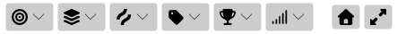
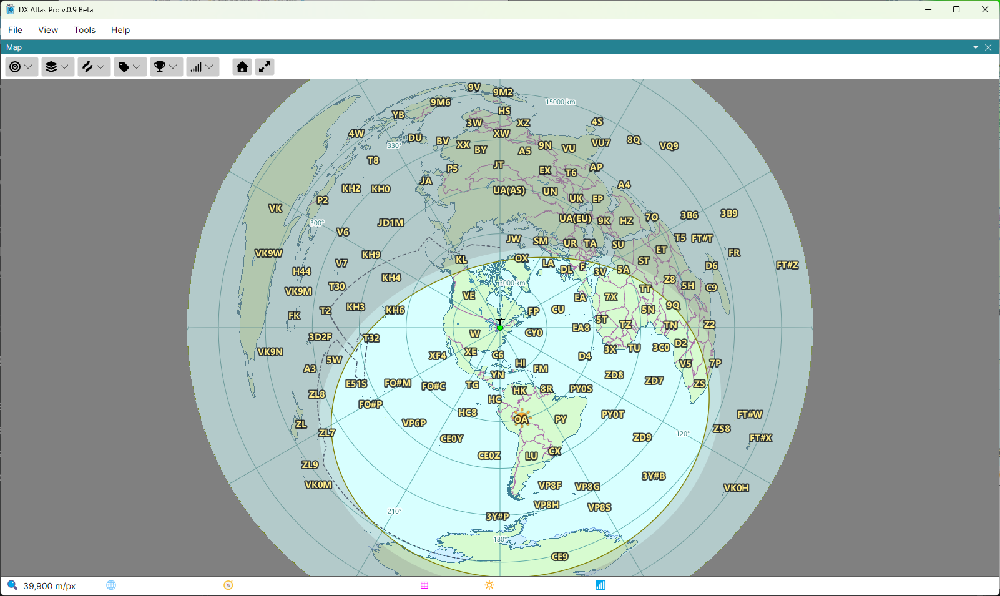
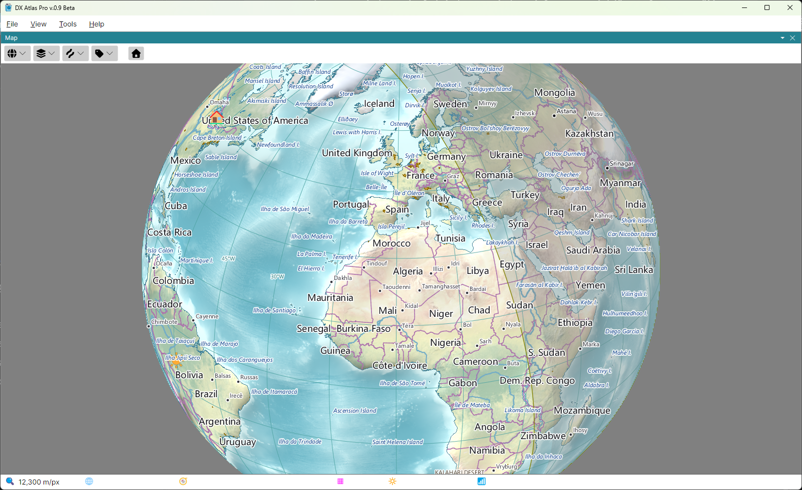

Projections, Zoom and Pan
Each of the two map panels has a toolbar above the map:

- Projection - the projection of this map;
- Layers, Lines and Labels - what the map shows; see Layers, Lines and Labels;
- Amateur Radio and Ionosphere - shown only with the Amateur Radio functions on; see The Amateur Radio Switch;
- Home - see Home Location.
The two maps are independent: each has its own projection, centre, zoom and layers.
Projections
Click the Projection button and pick one of the three projections. The button shows the glyph of the current one.
- Rectangular - the whole world in one rectangle, latitude and longitude as straight lines;
- Azimuthal - the azimuthal equidistant projection, centred on one point: every straight line through the centre is a great circle, and the distance and the bearing from the centre to any point are true. When you switch to it, the map is centred on your home location;
- Globe - the Earth as seen from space.


Zoom
Turn the mouse wheel over the map to zoom in and out; three steps of the wheel double or halve the magnification. On the rectangular map the zoom keeps the point under the mouse in place, so the wheel takes you to a place as well as closer to it. The azimuthal map and the globe zoom about their centre, which stays where it is.
The status bar shows the scale of the map under the mouse, in metres or feet per pixel, as set in the Units section of the Settings Dialog.
Pan
- Rectangular map - drag the map with the left mouse button;
- Globe - drag the globe to turn it;
- Azimuthal map - its centre is chosen, not dragged, since every distance and bearing on it is measured from the centre. Shift-click a point to make it the centre, or right-click it and pick Set as Center. Ctrl+Shift-click a point, or pick Set Antipode as Center, to centre the map on the point opposite it on the globe.
The Home button on the toolbar shows the whole world on the rectangular map, and centres the azimuthal map and the globe on your home location.
Linking the Two Maps
Alt-click a point on one map, or right-click it and pick Center Other Map Here, to centre the other map on that point; the other map keeps its projection and zoom. This works while both maps are shown.
The keys held with each click can be changed in the Mouse Clicks section of the Settings Dialog.
The Map's Context Menu
Right-click the map for a menu of what can be done at that point:
- Show Details for ... - the Item Details of the label under the mouse, or of everything at the point;
- Find in List - select the item under the mouse in the Lists Panel;
- Set as Center and Set Antipode as Center - on the azimuthal map only;
- Center Other Map Here;
- Set Home Location Here - see Home Location;
- Add Pin and Remove Pin - see Pins.